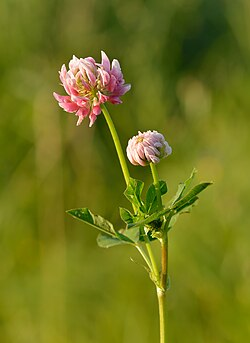

Uso como heno
Presenta dificultad para secarse debido a su alto contenido de humedad, pero ofrece buen rendimiento.
Mas conocido como Alsike
El Trifolium hybridum L, más conocido como alsike, es una especie perteneciente al género Trifolium, de la familia de las Fabáceas. Puede llegar a medir hasta 50 cm (20 pulgadas). Es una planta herbácea perenne muy utilizada en agricultura, especialmente como forraje debido a su alto valor nutritivo.

Puede reconocerse por las siguientes caracteristicas:
Es originario de la zona continental de Europa, desde el norte de Italia hasta Suecia, y desde el centro de Francia hasta Rusia.
También se encuentra en el suroeste de Asia y el norte de África, habiéndose naturalizado en regiones templadas de todo el mundo.
Crece en praderas húmedas, caminos, campos abandonados y laderas montañosas. Prefiere climas fríos y suelos húmedos.
Es una especie perenne de 3 a 4 años. Se siembra en primavera o finales de verano. El crecimiento inicial es lento, pero luego se vuelve vigoroso.
La floración ocurre en septiembre y octubre, momento en el cual se realiza el corte para heno.
La reproducción es por semillas, las cuales son abundantes. No se dispersa fácilmente a grandes distancias.
Forma simbiosis con bacterias del género Rhizobium, lo que le permite fijar nitrógeno en el suelo.
| Característica | Descripción |
|---|---|
| Duración | 3-4 años |
| Reproducción | Semillas |
| Polinización | Insectos (abejas) |
Presenta dificultad para secarse debido a su alto contenido de humedad, pero ofrece buen rendimiento.
Se recomienda el pastoreo antes de la floración y el uso de sistemas rotacionales.
Las hojas y flores pueden consumirse crudas o cocidas. También se utilizan en infusiones.
Se ha utilizado para favorecer la producción de leche en madres lactantes.
Puede causar una intoxicación leve en animales llamada "trifoliosis", provocando fotosensibilidad e irritación.
Trébol
Información recopilada de fuentes botánicas, agrícolas y publicaciones científicas.